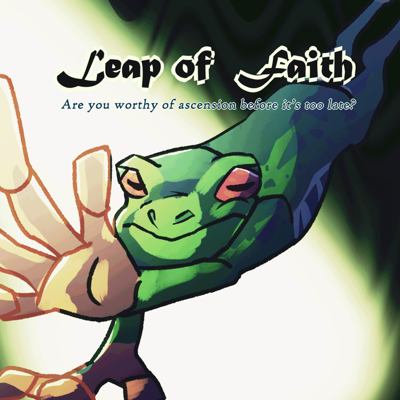
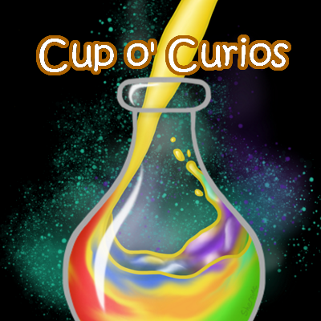
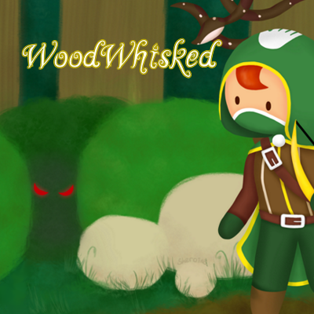
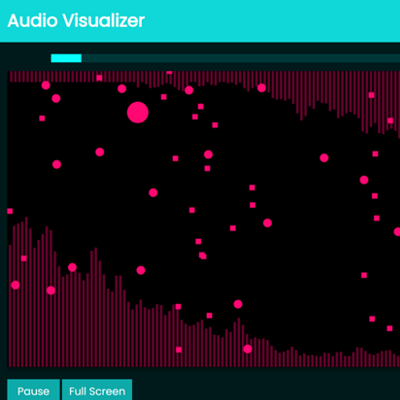
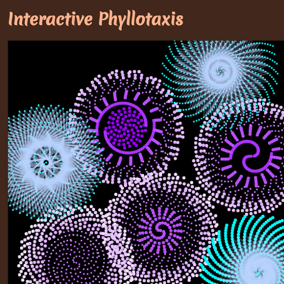

Mandy Wong
An artist and game designer
I am a graduating Game Design and Development student at Rochester Institute of Technology. I am passionate about making games and art as I like creating works and immersive experiences that people can enjoy. During my time at RIT, I have worked on multiple game prototypes with different people in small groups. When I'm not making more art in my free time, I enjoy crocheting, listening to music, and of course playing more games.
Leap of Faith

Feb 2022 - Current
Leap of Faith is a tabletop game prototype about amphibians at the end of the world competing against each other to run the best cult of them all. In hopes that their god would be appeased and spare their little souls from the impending doom on Earth.
It is an engine builder card game, where players would compete and build their own cult that would generate vast amounts of resources, be it fly tokens to get rich, or followers to perform seances for more self benefits or hinder other players.
We are currently continuing to develop and playtest the game!
Read more
Leap of Faith

More about the game
The manufactured prototype version of this game was done in roughly 2 months as a class project. We took inspiration from Wingspan and decided to make an engine builder game, with aims to make it more interactive between players than Wingspan does, especially between turns. Why frogs and cults though? Well frogs are cool, and cults are... cults. They're fun when it's a game and you get to make one, so we basically just smacked them together and we have a goofy and enjoyable theme.
This game is for 3 - 6 players. There are 4 decks of cards in the center: yellow donation cards, green building cards, purple seance cards, and red milestone cards. Donation, building, and seance cards go into the players' hands, while milestone cards always stay on the table. Players would start with 1 of each card in their hand except for milestone cards. Donation and Building cards are paid for with fly tokens and will be played in front of the player. Donation cards generate fly tokens, while building cards would generate anything else, likegetting more followers, drawing more cards, getting more action points etc. Those cards have different effects that trigger at different times and conditions. Players would want to find cards that synergise with each other and thus build their engine to generate resources.
There are also white cubes and green cubes provided and they are action cubes and follower cubes respectively. Some actions require players to use a white action cube along other resources, such as buying more action cubes, gain a new follower, draw a new card etc. Players start with 3 of them, and can buy more or gain from card effects. Action cubes are only used and not discarded, used action cubes will be available again on players' next turn.
Green follower cubes are used to play the purple seance cards, the last card type that goes into players' hands, or level up cards on the player's field. There are boxes on donation and building cards, and that's where the follower cubes belong, filling up each column from left to right to gain stronger card effects. Players would spend 1 action cube to place 1 follower cube onto a card. Playing seance cards would cost follower cubes not on a card, but they won't be sacrificed unless otherwise stated. They will just be used like action cubes, and would be available again next turn to cast more spells.
Lastly, at most 2 milestone cards are revealed to players at a time and they are goals that players would want to meet. Once the milestone is met, the player will claim the milestone and a new one will be flipped over on the next player's turn. These cards' numbers correspond to player score. The first player to reach 10 milestone points gains the favor of their god wins the game.
My work
This project is a group academic project of 6 people: Matthew Jacobs, Zach Sheikh, Thomas Siwanowicz, Julia Tennant, Zhao Xuanang, and me. Julia is an illustrator that we asked help from later in development to help with finishing card illustrations. The rest of us 5 developed the game from start to finish, and running playtests to balance and tweak the game. I was also responsible for designing the fly tokens, solidifying card layout designs, card back illustrations, and over half of the card face illustrations.
We started with a paper prototype and just threw out card effect ideas, then printed them out. We first had internal playtests to smooth out the game mechanics and system, scrapping things like the follower deck, and iterating on the building and magic deck. When the game got a little more stable and playable, we brought it to Crash Test, which is a club at RIT that allows people to bring in tabletop game prototypes to be playtested. We hosted a multitude of tests, both local and blind playtests, and were able to collect a lot of feedback and helpful advice or suggestions players had. Then eventually the game evolved to now have simple follower cubes, and upgradable cards.
The development of the game was our main focus, and we decided to wait until our card effects were more stable and set before we made any artwork for them, since the card illustrations are based on the cards' names and effects. While this prevented us from having to scrap artwork, this caused us a huge time crunch for me and Matt, the artists of the team, to produce unique illustrations for 53 cards. I managed to illustrate all the donation and building card faces, 5 magic card faces, 9 milestone card faces, the 4 card types' card backs, and the fly tokens. Matt designed the box art and some of the card faces, and Julia really helped reduce our load by helping with the rest of the card illustrations. Despite several delays, we still managed to finish all the art in time for our manufacture order to arrive before we showcased it at ImagineRIT, then the semester end showcase for our class.
Illustrations were done using Krita, some layouts were done in Photoshop.
Current work
Despite this being a class project, Thomas, Zach, Matt, and I felt that our game has potential and is genuinely fun to play, so we decided to contiue it's development and take it further. We are currently running a small public discord server to host playtests, and provide updates on our development. Thomas, Zach, and I have been meeting biweekly during the summer, hosting playtests on Friday night and collecting feedback, and then discussing and applying changes using that feedback on Monday nights, while Matt is developing a website for our game. We ported our game into Tabletop Simulator to allow all of us to host and join the tests remotely.
Our current new development progress with the game is that we have a bunch of new cards and effects being implemented and tested, that has more impact on players between their turn. Have a somewhat working solution on making earning milestone points less dependent on RNG. And our biggest fix we are trying to achieve currently is to properly reward players who successfully built an engine, since we have noticed a trend that our current system seems to favor players who earned a large sum of money in a short period of time, and subsequently buying a win without needing an engine at all.
We aren't nearly close to this step yet, but we aim to eventually publish this game of ours as a fully fledged and polished engine building game.
Cup o' Curios

Nov - Dec 2020
Cup o' Curios is a game prototype about finding the right combinations of ingredients to make the right
potions for customers. It takes after various cooking games like Diner Dash, and mainly inspired by the Cook
Serve Delicious series.
Players would have to guess the right ingredient combinations to make potions requested by their customers based on the attributes and nature of provided ingredients and requested potions, then try and earn as money as they can before the end of the day.
Read more
Cup o' Curios
More about the game
This game prototype was done in a little more than a month. It's setting and mechanics are based on
the Dresden Files univserse, specifically how potions are made in that universe as our game is about
making potions.
Players would have to guess the right ingredient combinations to make potions requested by their
customers based on the attributes and nature of provided ingredients and requested potions.
It will be confusing to start when the player is still trying to find the potion recipies. But once
the player gets them, it's all about speed and memory, to serve as many customers as possible to earn lots
of money by the end of the day. Then try to break their own highest records of cash earned.
Each ingredient is mapped to a key on the keyboard as indicated above the ingredient, so players will press the corresponding key to add that ingredient into the mixing bowl. The ingredients are also categorised into 8 types as indicated by the color of their name tag. It is because in the Dresden Files universe, potions are made with 8 ingredients: a liquid base, an ingredent for each of the 5 senses, one for the mind, and one for the spirit. Therefore, players can only add one of each type of ingredent into the bowl.
The potion needs to be mixed after 8 ingredients are added into the bowl, and it is done by holding down spacebar. It would simply not work if not enough ingredients are added. Once the mixture is stirred, players can tell what kind of potion they made by the color the mixture is. If that was not the potion the current customer needs or if the player added a wrong ingredient, they could press spacebar to start over. If the player did make the right potion, they will press enter to transfer the liquid into the flask on the right to shove magic into it. The white line on the bar under the flask will move across the bar, and players would preferrably want to stop it in the green zone by pressing enter again. If it lands in the green zone, it makes a great potion and customers will pay more; if it lands in the yellow, the potion is subpar and customers will pay a little less; if it goes over to the red, the player is using magic recklessly and customers will pay even less. If players served the wrong potion to the customer, they will lose some money, however if the customer left after waiting for too long, players won't loose anything.
My work
This project is a group academic project of 4 people: Patrick Mitchell, Camilo Lima, Rhys Stever, and me. I was responsible for making
all of the art and assets for this project, then implementing them as spritesheets in Unity.
We were required to submit box art for our prototype even if it's PC only. So we were allowed to
choose a different platform that does distrubute games with physical boxes and design one for that, thus a
PS4 box art for our PC game.
There are 24 ingredient types on the table, and they each have their own "piece image" asset that
appears in the mixing bowl. The stirred mixture is a white and grey image placed in between the front
and back of the bowl assets, then tinted in game to reflect the type of potion made by the player. The
table is made with help of texture stamps to reflect their material types.
The customers all have the same figure, in the same cloak with different colors, then mix and matched
4 types of skin color, hair styles, and eyes. This was done because I was running out of time to make
more varied assets by the end of the project, so we had to settle with similar looking customers instead of
a diverse cast. The cloak also unfortunately wasn't the best clothing style for this game's people,
since the Dresden Files universe is set in the modern US.
The menu art was based on the idea that this potion shop the player runs is located underground. So I
imagined that the shop is in some secret underground facility with a bunch of corridors, where other
magic users could rent out the rooms provided there and do whatever they please. And the menu art is
the door to the shop, with it's name and some art spray painted onto the wall and door directly.
It was really hard to find reference images that had indoor storefronts that don't have any windows,
since we decided that the shop wouldn't have windows for being underground. Or just underground
facilities that had the right feel or elements I wanted to find in general. I found exactly 1 image of
a door to a bar down a corridor with minimal wall art that expressed some liveliness and gave me the
right vibe for an underground society that isn't abandoned.
A rainbow potion being poured into a bottle while magic is shoved into it, depicted by the cyan and
purple particles and aura, is the design of the box art. The idea of "rainbow potion being poured into
a bottle" was suggested by Patrick since it is a simplier design, and we were running out of time to finish the project when I got to designing it. I took his suggestion and thought of the last step of making the potion: shoving magic into it. This highlights the magical aspect of the game and make an eye-catching design, and was how the design came to be.
All the art is done using Krita.
WoodWhisked

October 2020
WoodWhisked is a game prototype about a theurgist hunter finding their way out of a magical forest after
getting transported deep into it. It's main inspration is from Rust Bucket.
Players would have to safely navigate the forest, utilising remaining arrows and their theurgy abilities, to find the end rune in hopes of escaping the forest and return home.
Read more
WoodWhisked
More about the game
This game prototype was done in a month. It's setting and mechanics are based on the Ethshar universe,
specifically theurgy as the form of magic that the player character uses. Some enemies are also cannonical creatures in the Ethshar universe, such as the treesquid.
WoodWhisked is a tile based, casual adventure puzzle game. Players would have to navigate to the end
tile, which is a cyan colored rune, to complete the level and proceed to the next. Along the way there
would be enemies, like the boar and the treesquid, that would hurt the player on contact and restart
the
level. Players would have to utilise their remaining arrows from their hunting trip, and their theurgy
abilities to safely navigate the forest and reach their end goal.
Our game is also turn based, where enemies will not make their turn until the player does, therefore
the
player can take their time to think of their next moves, and observe enemy behaviour and movement
patterns. Boars will move 1 tile every 2 turns and try to ram into the player, while the tree squid is
stationary. Originally it was planned that the treesquid would hide in their tree until the player
gets
close enough, then attack the player when they are in the tiles adjacent to the tree. However we ran
out
of time to implement that.
Currently we have implemented 4 levels, 2 enemy types, shooting arrows, and 1 theurgy ability. There
were more enemies and theurgy abilities planned during development, but we weren't able to implement
all
of them due to the time constrain. Entities are also unfortunately unanimated.
My work
This project is a group academic project of 4 people: Patrick Mitchell, Camilo Lima, Rhys Stever, and me. I was responsible for making
all of the art and assets for
this project, then implementing them as spritesheets in Unity.
We were required to submit box art for our prototype even if it's PC only. So we were allowed to
choose
a different platform that does distrubute games with physical boxes and design one for that, thus a
PS4
box art for our PC game.
All the tiles in the game are 64px squares. Grass and path tiles all connect with each other
seamlessly.
The flora consists of 2 types of trees, tree stumps, fallen logs, and bushes. Due to the time
constrain,
and this being a prototype, these tile assets are rather simple and has no shading done on them so I
could save time and get them done as quickly as possible.
The entities have more detail though, especially the player character, where their design has to
reflect
that they are a theurgist hunter. The white handprint on their hood and quiver, alongside the gold
trim
of their robe are what theurgists wear in the Ethshar universe. Though as a hunter, they would have to
blend into the environment as well, thus their robe being green instead of white. The player
character's
design was a fun mix and match of 2 roles and their respective attire and symbols.
Rune tiles were designed with reference to magic circles and rune symbols. The end tile had a bunch of
symbols drawn in it that mostly relate to "teleportation", "nature", "wind", and "home". That's
because
the player character wishes to find their way out of the forest and back home, and a change of
location
(to next level) suggests teleportation of some sort. The green "pressure plate" rune was mostly
designed
on the idea of an eye, where it's like something is awakened and it opens its eyes. But since it's a
rune, they are drawings or inscriptions, so the eye doesn't open or close, but the glowing parts
reflect
its current state instead.
Ability icons on the top left have 2 different outline colors because of their different nature. Using
your bow and arrow is a normal physical skill, so it has a plain black outline. While the leap
ability,
along with 2 other unimplemented abilities, have a light yellow outline that has a bit of an inner
glow
to show that they are theurgy abilities and relating to magic.
The buttons were also designed by me, and they are a 9-sliced sprite. They are designed to look fancy,
are green and gold to reflect the player character's robe colors, and look like vines of a sort due to
the game's setting in a magical forest.
The menu art is of the forest the player character is situated in: a dense and mysterious forest. The
box art features the player, a hidden treesquid, and an unimplemented enemy called a mizagar, where
only
its red menacing eyes are seen. Mizagars are another cannonical creature in the Ethshar universe, and
would have been a great and challenging enemy to face, but as mentioned above, we didn't have the time
to implement it, so I added it to the box design as an homage.
A mizagar is said to be really hard to detect, and nearly invisible at night, therefore only their
eyes
were drawn in the design. Humans are also their preferred food, thus I made the eyes menacing, to show
that they are a threat to the player character. While the mizagar isn't in our prototype, having it in
the box art as a lurking danger better reflects the tone and mood of our game, and letting potential
consumers know what they're getting into whie looking at the game box to decide whether or not to buy
it.
One small unfortunate note about the box art though, I was rushing to complete it and in the heat of
it
forgot to add the game name to the spine.
All the art is done using Krita.
Audio Visualizer / Just Visuals and Audio

Feb - Mar 2020
We were tasked to make an audio visualizer for this project, where users can control some of the visual and
audio effects. Then we decided to gamify it, and make it play similar to the game Just Shapes and Beats.
Currently there are 3 tracks for selection, and each track has differnet visual elements. Visual elements include poppers, blips, moving Bezier curves, and audio data.
Read more
Audio Visualizer / Just Visuals and Audio
More about the project
Currently there are 3 tracks for selection, and each track has differnet visual elements. Visual
elements include poppers, blips, moving Bezier curves, and audio data.
Bars are used to present audio data, and users can pick between viewing the music's frequencies or
waveform. It is shown on all 3 tracks, is behind and slightly dimmer than other visual elements.
Poppers will constantly bounce around the screen, their size changes with a randomly selected
frequency
data node, and if cooldown is up they will pop and spawn blips if the frequency is high enough or if
the
previous value has large enough of a different than the current one.
Blips are just small circles or squares that move across the screen in a single direction and speed
until they move off screen, then they disappear.
Moving Bezier curves can be either a regular Bezier curve or a quadradic Bezier curve. Their start and
end points are stationary, but their control points will move and bounce around the screen, their
speed
varying with the waveform audio data, producing Bezier curves that change shape with the music.
The first track consists of 2 poppers, a square and a circle one; The second track consists of 1
circle
popper, and blips spawning from the right size of the canvas if the audio data has a high average; the
third track consists of 5 quadradic Bezier curves in the center and 2 regular Bezier curves on the
sides, along with a surprise.
Controls are provided to the user, it can be opened and collasped in the top right corner, and they
can
pick which music track they want to listen to, adjust the volume, visual effects, and audio effects,
and
pick which audio data to view.
Visual effects include changing the color scheme, have the color scheme be a gradient or not, toggle
noise, invert colors, and show an emboss effect. Audio effects including adjusting the bass or treble
effect, and toggle distortion. Unfortunately, the distortion toggle does not work because we ran out
of
time to figure it out.
One last control is the gamify toggle, which will turn the Audio Visualizer into Just Visuals and
Audio,
mimicking the music bullet hell game Just Shapes and Beats. However, this portion is notoriously
unfinished, and frankly isn't a game yet. The toggle changes the heading of the page, adds a player
select and stats below the play / pause button, adds a player shape to the canvas that follows the
cursor, and freezes everything on the canvas when the music is paused, but that's all we managed to
complete before the submission deadline.
This was totally the case of us biting off way more than we could chew, but also it was around the
time
when Covid-19 lockdowns started getting issued, and we all had to quickly switch to working completely
remotely. So with all that extra stress happening, we couldn't get around to implement collision
detection, which is the one and main thing that makes it a game.
We were planning to have keyboard controls and have a dash just like Just Shapes and Beats, but we
couldn't figure out how to implement keyboard inputs at the time, so we quickly switched to having the cursor be the
player. We added the player stats so that players could see how many
hits they took and how many dashes they did, and a ranking system based on the number of hits players
took. But as mentioned above, collision detection wasn't even implemented, so none of these stats
could
be properly shown.
My work
We worked in pairs for this academic project, and both of us had to work on all parts of this project
equally. My
friend Joseph and I
contributed
to the coding, working on different classes and files at the same time. The idea of making a game out of an audio visualizer and picking Just Shapes and Beats as the game to
mimick was my idea, since I thoroughly enjoyed that game, and got really excited at the thought that
we
could make something like that. (And thus got way too ambitious.)
I was more experienced with the mechanics of Just Shapes and Beats, so I guided Joseph on what kind
of visual elements we could add to this project, namely the poppers and blips. The Bezier curves were
a
fun addition suggested by Joseph while we were wondering what simplier shape or element we could
easily add and clearly represent the audio data. Then I suggested we move the curves' control points
around the screen since I did that in a different assignment and had a lot of fun with it.
There is a lot of code in this project, some given by our professor, a bunch taken and refactored from
our past projects, and a lot we figured out along the way. There's no clear differentiation on which
parts of the code each of us did, since we did paired programming and helped each other out a lot of
the
times as well. I believe the only thing that was done separately was me rushing to write the css to
make
the page resemble Just Shapes and Beats, while Joseph rushed to write the documentation for our
project before submission.
This project was done entirely with Javascript, HTML, and CSS, and with help of the Canvas API, Web
Audio API, and dat.GUI API.
You can check out our project here!
Interactive Phyllotaxis

February 2020
In this project we had to use the phyllotaxis mathematical formula to create an artistic interactive
experience. Users can click to create sprials on the canvas, and have a multitude of controls to change how
the sprials grow on the fly.
Users can generate flowers will different sizes, colors, petal shapes, lines, and sprial patterns. Each flower could keep a single unchanged design, or mix and match the above listed parameters.
Read more
Interactive Phyllotaxis
More about the project
Phyllotaxis is related to botany and refers to the arrangement of leaves on a plant stem, it is also
seen in plants that grow in sprial patterns. This project uses one of the mathematical formula
proposed
by Vogel to obtain the polar coordinates of successive florets, where the divergence angle would
determine what pattern would result.
Users will click on the canvas and a sprial will start growing from that point, and there can be
multiple flowers / sprials growing at once. Controls include flower size, petal padding, petal size,
divergence angle, petal shape and color, and toggle lines drawn between petals and their color. Users
can also pause and play the growth of flowers, change the background color of the canvas, save their
creations to their computer, and reset the canvas.
Flower size affects the number of dots drawn in a spawned sprial; petal padding affects the space
between each petal; petal size is just the size of each dot. The divergence angle as mentioned above
is
what changes the type of sprial the dots will be drawn in. Changing the value of it by even 0.5 will
result in a completely different sprial pattern. By default petals are circles, but if users uncheck
that option they will get square petals, however they won't rotate based on their position. Lines are
unchecked by default, they are drawn from the previous dot to the next dot if checked. Both petals and
lines have a separate color picker for changing their color.
Some of these controls will affect flowers that are currently still growing on the canvas, so users
can
make a single flower have petals with multiple colors, shapes, lines and even change the type of
sprial
with the divergence angle halfway through. This is where the play pause buttons come in handy, where
users can pause the canvas and have all the time they needed to change the flower parameters, then
play
it again and see all the new changes at once. Flowers can still be initiated by clicking when the
canvas
is paused, however I did not think of having an indication for that during development. It was
suggested
to me after it was submitted that I could have drawn the first dot for the sprial when the canvas is
paused. So currently it would look like nothing happened when the canvas is clicked when it's paused,
then all the flowers will bloom together once the play button is pressed, and I understand this would
definitely confuse users at first.
Users can change the background image of the canvas, however it does not appear in the saved image if
users decided to download the image. It's because I changed the css styling of the canvas instead of
drawing the background onto the canvas directly, so the downloaded image will always have a
transparent
background regardless of what the user selected.
My work
This is an individual academic project. There was some code that was given to us from the professor,
then I wrote the rest of the code by myself. The css styling for the custom radio buttons, checkboxes,
and slider were code copied from w3schools, and I made the color palette of the page with help of
paletton.com. I had tried to not take w3school's code directly, however any modification to it besides
changing simple color hex codes and certain values would just break the entire thing. Therefore, I
only
changed the color of elements and left the code as is, then linked the source as comments in the css
file.
This project was done entirely with Javascript, HTML, and CSS, and with help of the Canvas API.
You can check out my project here!
Bonus: I discovered if you check lines, make them a different color than the dots, then keep clicking
the same
exact spot in short intervals, it creates a really cool visual effect as you watch multiple flowers
grow
together in the same spot.